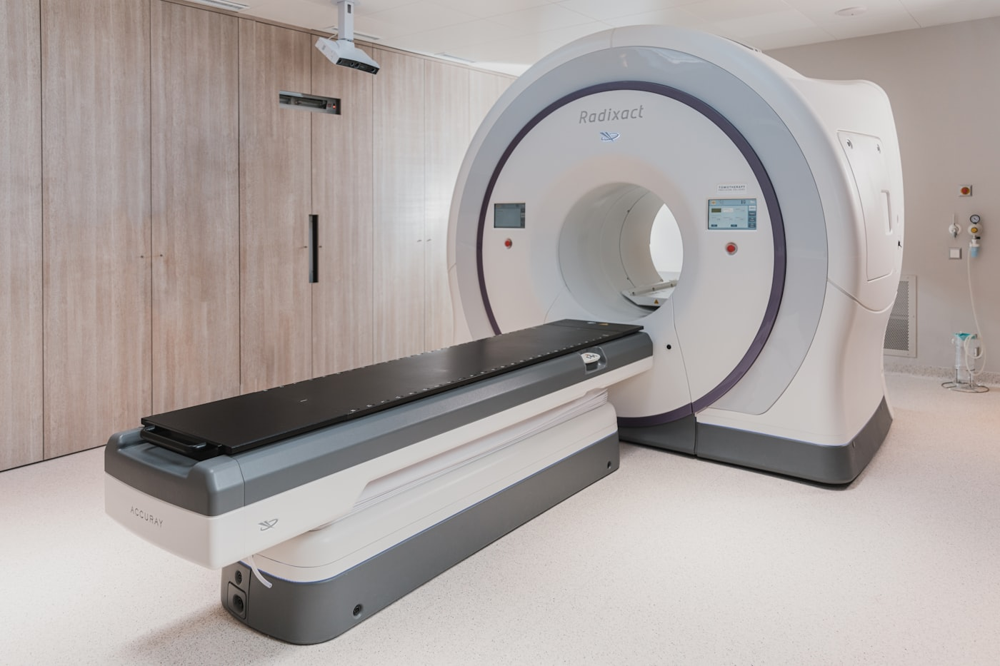
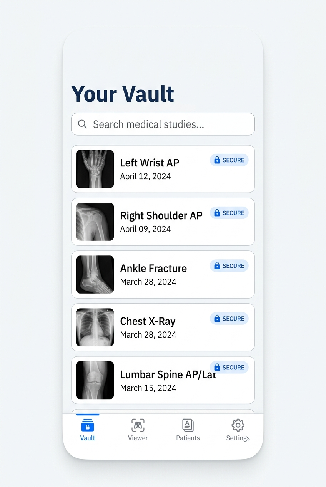
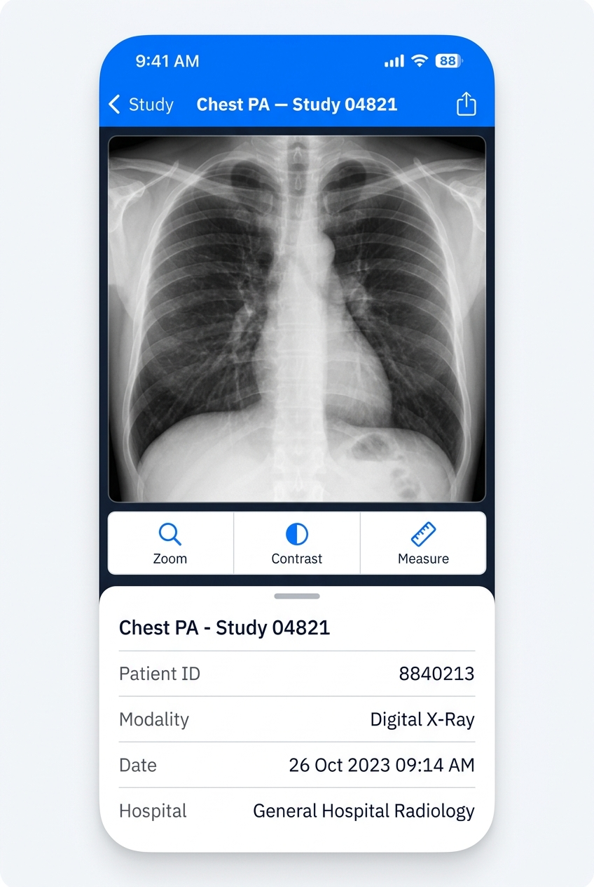
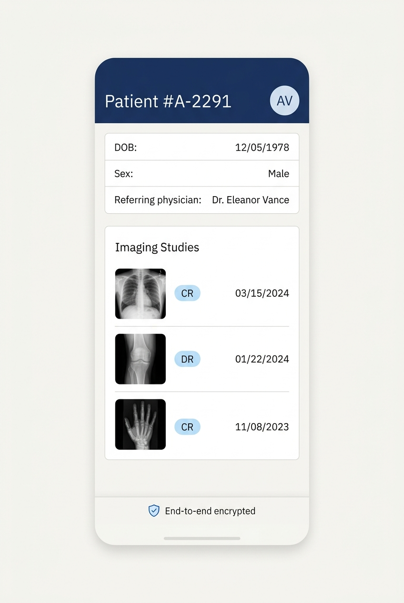

Zero-knowledge
End-to-end encryption
Every study is sealed with 256-bit AES on your device. Keys never touch our servers, so a read stays between you and the patient — always.
Studies, DICOM images and patient records — encrypted on-device. Review, window-level, measure and share from anywhere, without ever exposing raw data.
Everything a clinician needs between the scanner and the report — engineered so nothing sensitive ever leaves the device unprotected.

Every study is sealed with 256-bit AES on your device. Keys never touch our servers, so a read stays between you and the patient — always.
Pan, zoom and window-level with native fidelity.
Link studies to structured, searchable histories.
Read anywhere — dead zones, basements, in transit.
Send a study with an expiring, revocable link.
Gesture-native controls put full window-level, zoom and measurement in reach — the way you'd expect on a diagnostic workstation, distilled to a single hand.
The read shouldn't be chained to a workstation. Your vault travels with you, ready the moment you open the app.
Studies never leave the device unencrypted. We designed the storage so that we couldn't read your data even if we tried.
Pan, zoom, window-level and measure with the fidelity clinicians expect — no lossy previews, no guesswork.
Works with zero signal and syncs on your terms. Connectivity is a convenience, never a dependency.
A calm, clinical interface that keeps the scan front and centre — placeholder screens shown here.



Free to try. No study ever leaves your device unencrypted.